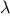

In section
1.1.8, we noted
that a
function
used as an element in creating a more complex
function
could be regarded not only as a collection of particular
operations but also as a
functional
abstraction. That is, the details
of how the
function
was implemented could be suppressed, and the
particular
function
itself could be replaced by any other
function
with the same overall behavior. In other words, we could make an
abstraction that would separate the way the
function
would be used
from the details of how the
function
would be implemented in terms of
more primitive
functions. The analogous notion for compound data is
called
data abstraction. Data abstraction is a methodology that
enables us to isolate how a compound data object is used from the
details of how it is constructed from more primitive data objects.
The basic idea of data abstraction is to structure the programs that
are to use compound data objects so that they operate on
“abstract
data.” That is, our programs should use data in such a way as to make
no assumptions about the data that are not strictly necessary for
performing the task at hand. At the same time, a
“concrete” data
representation is defined independent of the programs that use
the data. The interface between these two parts of our system will be
a set of
functions, called
selectors and
constructors,
that implement the abstract data in terms of the concrete
representation. To illustrate this technique, we will consider how to
design a set of
functions
for manipulating rational numbers.
Suppose we want to do arithmetic with rational numbers. We want to be
able to add, subtract, multiply, and divide them and to test whether
two rational numbers are equal.
Let us begin by assuming that we already have a way of constructing a
rational number from a numerator and a denominator. We also assume
that, given a rational number, we have a way of extracting (or
selecting) its numerator and its denominator. Let us further assume
that the constructor and selectors are available as
functions:
-
make_rat(n,d)
returns the
rational number whose numerator is the integer n
and whose denominator is the integer d.
-
numer(x)
returns the numerator of the rational
number x.
-
denom(x)
returns the denominator of the
rational number x.
We are using here a powerful strategy of synthesis:
wishful thinking.
We haven’t yet said how a rational number is represented, or how the
functions
numer,
denom, and
make_rat
should be
implemented. Even so, if we did have these three
functions, we could
then add, subtract, multiply, divide, and test equality by using the
following relations:
We can express these rules as
functions:
function add_rat(x,y) {
return make_rat(numer(x)*denom(y) + numer(y)*denom(x),
denom(x) * denom(y));
}
function sub_rat(x,y) {
return make_rat(numer(x)*denom(y) - numer(y)*denom(x),
denom(x) * denom(y));
}
function mul_rat(x,y) {
return make_rat(numer(x)*numer(y),
denom(x)*denom(y));
}
function div_rat(x,y) {
return make_rat(numer(x)*denom(y),
denom(x)*numer(y));
}
function equal_rat(x,y) {
return numer(x)*denom(y) === numer(y)*denom(x);
}
Now we have the operations on rational numbers defined in terms of the
selector and constructor
functions
numer, denom, and make_rat.
But we haven’t yet defined these.
What we need is some way to glue together a numerator and a
denominator to form a rational
number.
Pairs
To enable us to implement the concrete level of our data
abstraction, our language provides a compound structure called a
pair, which can be constructed with the
function
pair. This
function
takes two arguments and returns a compound data
object that contains the two arguments as parts. Given a pair, we can
extract the parts using the primitive
functions
head
and
tail.
These functions are not “primitive” functions in JavaScript. However, they are available in the programming environment used here, defined using
arrays, one of JavaScript’s primitive data structures.
Thus, we can use
pair,
head, and
tail as follows:
var x = pair(1,2);
head(x);
tail(x);
Notice that a pair is a data object that can be given a name and
manipulated, just like a primitive data object. Moreover,
pair
can be used to form pairs whose elements are pairs, and so on:
var x = pair(1,2);
var y = pair(3,4);
var z = pair(x,y);
head(head(z));
head(tail(z));
In section
2.2 we will see how this ability to
combine pairs means that pairs can be used as general-purpose building
blocks to create all sorts of complex data structures. The single
compound-data primitive
pair, implemented by the
functions
pair,
head, and
tail, is the only glue we need. Data
objects constructed from pairs are called
list-structured data.
Representing rational numbers
Pairs offer a natural way to complete the rational-number system.
Simply represent a rational number as a pair of two integers: a
numerator and a denominator. Then
make_rat,
numer, and
denom are readily implemented as
follows:
2
var make_rat = pair;
var numer = head;
var denom = tail;
Also, in order to display the results of our computations,
we can
print rational numbers by printing the numerator, a
slash, and the denominator:
3
function print_rat(x) {
return print(numer(x) + "/" + denom(x));
}
Now we can try our rational-number
functions:
var one_half = make_rat(1,2);
print_rat(one_half);
print_rat(add_rat(one_half,one_third));
print_rat(mul_rat(one_half,one_third));
print_rat(div_rat(one_half,one_third));
As the final example shows, our rational-number implementation does
not reduce rational numbers to lowest terms. We can remedy this by
changing
make_rat. If we have a
gcd
function
like the one
in section
1.2.5 that produces the greatest common divisor of two
integers, we can use
gcd to reduce the numerator and the
denominator to lowest terms before constructing the pair:
function make_rat(n,d) {
var g = gcd(n,d);
return pair(n / g, d / g);
}
Now we have
print_rat(add_rat(one_third,one_third));
as desired. This modification was accomplished by changing the
constructor
make-rat without changing any of the
functions
(such as
add_rat and
mul_rat)
that implement the actual operations.
Exercise 2.1.
Define a better version of
make_rat that
handles both positive and negative arguments. The function
make_rat should
normalize the sign so that if the rational number is positive, both
the numerator and denominator are positive, and if the rational number
is negative, only the numerator is negative.
Before continuing with more examples of compound data and data
abstraction, let us consider some of the issues raised by the
rational-number example. We defined the rational-number operations in
terms of a constructor make_rat and selectors numer and
denom. In general, the underlying idea of data abstraction is
to identify for each type of data object a basic set of operations in
terms of which all manipulations of data objects of that type will be
expressed, and then to use only those operations in manipulating the
data.
We can envision the structure of the rational-number system as
shown in figure
2.1. The
horizontal lines represent
abstraction barriers that isolate
different “levels” of the system. At each level, the barrier
separates the programs (above) that use the data abstraction from the
programs (below) that implement the data abstraction. Programs that
use rational numbers manipulate them solely in terms of the
functions
supplied “for public use” by the rational-number package:
add_rat,
sub_rat,
mul_rat,
div_rat, and
equal_rat. These, in turn, are implemented solely in terms of the
constructor and selectors
make_rat,
numer, and
denom, which themselves are implemented in terms of pairs. The
details of how pairs are implemented are irrelevant to the rest of the
rational-number package so long as pairs can be manipulated by the use
of
pair,
head, and
tail. In effect,
functions
at
each level are the interfaces that define the abstraction barriers and
connect the different levels.

|
Figure 2.
1 Data-abstraction barriers in the rational-number package.
|
This simple idea has many advantages. One advantage is that it makes
programs much easier to maintain and to modify. Any complex data
structure can be represented in a variety of ways with the primitive
data structures provided by a programming language. Of course, the
choice of representation influences the programs that operate on it;
thus, if the representation were to be changed at some later time, all
such programs might have to be modified accordingly. This task could
be time-consuming and expensive in the case of large programs unless
the dependence on the representation were to be confined by design to
a very few program modules.
For example, an alternate way to address the problem of reducing rational
numbers to lowest terms is to perform the reduction whenever we
access the parts of a rational number, rather than when we construct
it. This leads to different constructor and selector
functions:
function make_rat(n,d) {
return pair(n,d);
}
function numer(x) {
var g = gcd(head(x),tail(x));
return head(x) / g;
}
function denom(x) {
var g = gcd(head(x),tail(x));
return tail(x) / g;
}
The difference between this implementation and the previous one lies
in when we compute the gcd.
If in our typical use of rational numbers we access the
numerators and denominators of the same rational numbers many
times, it would be preferable
to compute the gcd when the rational numbers are constructed.
If not, we may be better off waiting until access
time to compute the gcd. In any case, when
we change from one representation to the other, the
functions
add_rat, sub_rat, and so on do not have to be modified at all.
Constraining the dependence on the representation to a few interface
functions
helps us design programs as well as modify them,
because it allows us to maintain the flexibility to consider alternate
implementations. To continue with our simple example, suppose we are
designing a rational-number package and we can’t decide initially
whether to perform the gcd at construction time or at selection
time. The data-abstraction methodology gives us a way to defer that
decision without losing the ability to make progress on the rest of
the system.
Exercise 2.2.
Consider the problem of representing
line segments in a plane. Each segment is
represented as a pair of points: a starting point and an ending point.
Define a constructor
make_segment and selectors
start_segment
and
end_segment that define the representation of segments in
terms of points. Furthermore, a point
can be represented as a pair
of numbers: the
coordinate and the
coordinate. Accordingly,
specify a constructor
make_point and selectors
x_point and
y_point that define this representation. Finally, using your
selectors and constructors, define a
function
midpoint_segment
that takes a line segment as argument and returns its midpoint (the
point whose coordinates are the average of the coordinates of the
endpoints).
To try your
functions, you’ll need a way to print points:
function print_point(p) {
newline();
display("(" + x_point(p) +
"," + y_point(p) +
")");
}
Exercise 2.3.
Implement a representation for rectangles in a plane.
(Hint: You may want to make use of exercise
2.2.)
In terms of
your constructors and selectors, create
functions
that compute the
perimeter and the area of a given rectangle. Now implement a
different representation for rectangles. Can you design your system
with suitable abstraction barriers, so that the same perimeter and
area
functions
will work using either representation?
We began the rational-number implementation in
section
2.1.1 by implementing the rational-number
operations
add_rat,
sub_rat, and so on in terms of three
unspecified
functions:
make_rat,
numer, and
denom.
At that point, we could think of the operations as being defined in
terms of data objects—numerators, denominators, and rational
numbers—whose behavior was specified by the latter three
functions.
But exactly what is meant by
data? It is not enough to say
“whatever is implemented by the given selectors and constructors.”
Clearly, not every arbitrary set of three
functions
can serve as an
appropriate basis for the rational-number implementation. We need to
guarantee that,
if we construct a rational number
x from a pair
of integers
n and
d, then extracting the
numer and the
denom of
x and dividing them should yield the same result
as dividing
n by
d.
In other words,
make_rat,
numer, and
denom must satisfy the condition that, for any
integer
n and any non-zero integer
d, if
x is
make_rat(n,d), then

In fact, this is the only condition
make_rat,
numer, and
denom must fulfill in order to form a suitable basis for a
rational-number representation. In general, we can think of data as
defined by some collection of selectors and constructors, together
with specified conditions that these
functions
must fulfill in order
to be a valid representation.
4
This point of view can serve to define not only “high-level” data
objects, such as rational numbers, but lower-level objects as well.
Consider the notion of a pair, which we used in order to define our
rational numbers. We never actually said what a pair was, only that
the language supplied
functions
pair,
head, and
tail
for operating on pairs. But the only thing we need to know about
these three operations
is that if we glue two objects together using
pair we can retrieve the objects using
head and
tail.
That is, the operations satisfy the condition that, for any objects
x and
y, if
z is
pair(x,y) then
head(z)
is
x and
tail(x) is
y. Indeed, we mentioned that
these three
functions
are included as primitives in our language.
However, any triple of
functions
that satisfies the above condition
can be used as the basis for implementing pairs. This point is
illustrated strikingly by the fact that we could implement
pair,
head, and
tail without using any data structures at all but
only using
functions. Here are the definitions:
function pair(x,y) {
function dispatch(m) {
if (m === 0) return x;
else if (m === 1) return y;
else error("Argument not 0 or 1 -- pair ",m);
}
return dispatch;
}
function head(z) {
return z(0);
}
function tail(z) {
return z(1);
}
This use of
functions
corresponds to nothing like our intuitive
notion of what data should be. Nevertheless, all we need to do to
show that this is a valid way to represent pairs is to verify that
these
functions
satisfy the condition given above.
The subtle point to notice is that the value returned by pair(x,y) is a
function—namely the internally defined
function
dispatch, which takes one argument and returns either x or y depending on whether the argument is 0 or 1. Correspondingly, head(z) is defined to apply z to 0. Hence, if z is the
function
formed by pair(x,y), then z applied to 0 will
yield x. Thus, we have shown that head(pair(x,y)) yields
x, as desired. Similarly, tail(pair(x,y)) applies the
function
returned by pair(x,y) to 1, which returns y.
Therefore, this
functional
implementation of pairs is a valid
implementation, and if we access pairs using only pair, head, and tail we cannot distinguish this implementation from one
that uses “real” data structures.
The point of exhibiting the
functional
representation of pairs is not
that our language works this way
(we will be using arrays to represent pairs)
but that it could
work this way. The
functional
representation, although obscure, is a
perfectly adequate way to represent pairs, since it fulfills the only
conditions that pairs need to fulfill. This example also demonstrates
that the ability to manipulate
functions
as objects automatically
provides the ability to represent compound data. This may seem a
curiosity now, but
functional
representations of data will play a
central role in our programming repertoire. This style of programming
is often called
message passing, and we will be using it as a
basic tool in chapter 3 when we address the issues of modeling and
simulation.
Exercise 2.4.
Here is an alternative
functional
representation of pairs. For this
representation, verify that
head(pair(x,y)) yields
x for
any objects
x and
y.
function pair(x,y) {
return function(m) { return m(x,y); }
}
function head(z) {
return z(function(p,q) { return p; });
}
What is the corresponding definition of
tail? (Hint: To verify
that this works, make use of the substitution model of
section
1.1.5.)
Exercise 2.5.
Show that we can represent pairs of nonnegative integers using only
numbers and arithmetic operations if we represent the pair
and
as the integer that is the product
. Give the corresponding
definitions of the
functions
pair,
head, and
tail.
Exercise 2.6.
In case representing pairs as
functions
wasn’t mind-boggling enough,
consider that, in a language that can manipulate
functions, we can
get by without numbers (at least insofar as nonnegative integers are
concerned) by implementing 0 and the operation of adding 1 as
var zero = function(f) { return function(x) { return x; }};
function add_1(n) {
return function(f) {
return function(x) {
return f(n(f)(x));
}
}
}
This representation is known as
Church numerals, after its
inventor,
Alonzo Church, the logician who invented the

calculus.
Define
one and
two directly (not in terms of
zero
and
add_1). (Hint: Use substitution to evaluate
add_1(zero)).
Give a direct definition of the addition
function
+ (not in
terms of repeated application of
add_1).
Alyssa P. Hacker is designing a system to help people solve
engineering problems. One feature she wants to provide in her system
is the ability to manipulate inexact quantities (such as measured
parameters of physical devices) with known precision, so that when
computations are done with such approximate quantities the results
will be numbers of known precision.
Electrical engineers will be using Alyssa’s system to compute
electrical quantities. It is sometimes necessary for them to compute
the value of a parallel equivalent resistance
of two
resistors
and
using the formula
Resistance values are usually known only up to some
tolerance
guaranteed by the manufacturer of the resistor. For example, if you
buy a resistor labeled “6.8 ohms with 10% tolerance” you can only
be sure that the resistor has a resistance between and
ohms. Thus, if you have a 6.8-ohm 10% resistor in
parallel with a 4.7-ohm 5% resistor, the resistance of the
combination can range from about 2.58 ohms (if the two resistors are
at the lower bounds) to about 2.97 ohms (if the two resistors are at
the upper bounds).
Alyssa’s idea is to implement “interval arithmetic” as a set of
arithmetic operations for combining “intervals” (objects
that represent the range of possible values of an inexact quantity).
The result of adding, subtracting, multiplying, or dividing two
intervals is itself an interval, representing the range of the
result.
Alyssa postulates the existence of an abstract object called an
“interval” that has two endpoints: a lower bound and an upper bound.
She also presumes that, given the endpoints of an interval, she can
construct the interval using the data constructor
make_interval.
Alyssa first writes a
function
for adding two intervals. She
reasons that the minimum value the sum could be is the sum of the two
lower bounds and the maximum value it could be is the sum of the two
upper bounds:
function add_interval(x,y) {
return make_interval(lower_bound(x) + lower_bound(y),
upper_bound(x) + upper_bound(y));
}
Alyssa also works out the product of two intervals by finding the
minimum and the maximum of the products of the bounds and using them
as the bounds of the resulting interval. (
Math.min and
Math.max are
primitives that find the minimum or maximum of any number of
arguments.)
function mul_interval(x,y) {
var p1 = lower_bound(x) * lower_bound(y);
var p2 = lower_bound(x) * upper_bound(y);
var p3 = upper_bound(x) * lower_bound(y);
var p4 = upper_bound(x) * upper_bound(y);
return make_interval(Math.min(p1,p2,p3,p4),
Math.max(p1,p2,p3,p4));
}
To divide two intervals, Alyssa multiplies the first by the reciprocal of
the second. Note that the bounds of the reciprocal interval are
the reciprocal of the upper bound and the reciprocal of the lower bound, in
that order.
function div_interval(x,y) {
return mul_interval(x,
make_interval(1.0 / upper_bound(y),
1.0 / lower_bound(y)));
}
Exercise 2.7.
Alyssa’s program is incomplete because she has not specified the
implementation of the interval abstraction. Here is a definition of
the interval constructor:
// student needs to add upper_bound and lower_bound
function make_interval(a,b) {
return pair(a,b);
}
Define selectors
upper_bound and
lower_bound to complete
the implementation.
Exercise 2.8.
Using reasoning analogous to Alyssa’s, describe how the difference
of two intervals may be computed. Define a corresponding subtraction
function, called
sub_interval.
Exercise 2.9.
The
width of an interval is half of the difference between its
upper and lower bounds. The width is a measure of the uncertainty of
the number specified by the interval. For some arithmetic operations
the width of the result of combining two intervals is a function only
of the widths of the argument intervals, whereas for others the width
of the combination is not a function of the widths of the argument
intervals. Show that the width of the sum (or difference) of two
intervals is a function only of the widths of the intervals being
added (or subtracted). Give examples to show that this is not true
for multiplication or division.
Exercise 2.10.
Ben Bitdiddle, an expert systems programmer, looks over Alyssa’s
shoulder and comments that it is not clear what it means to
divide by an interval that spans zero. Modify Alyssa’s code to
check for this condition and to signal an error if it occurs.
Exercise 2.11.
In passing, Ben also cryptically comments: “By testing the signs of
the endpoints of the intervals, it is possible to break
mul_interval into nine cases, only one of which requires more than
two multiplications.” Rewrite this
function
using Ben’s
suggestion.
After debugging her program, Alyssa shows it to a potential user,
who complains that her program solves the wrong problem. He
wants a program that can deal with numbers represented as a center
value and an additive tolerance; for example, he wants to work with
intervals such as
rather than
.
Alyssa
returns to her desk and fixes this problem by supplying an alternate
constructor and alternate selectors:
function make_center_width(c,w) {
return make_interval(c - w, c + w);
}
function center(i) {
return (lower_bound(i) + upper_bound(i)) / 2;
}
function width(i) {
return (upper_bound(i) - lower_bound(i)) / 2;
}
Unfortunately, most of Alyssa’s users are engineers. Real engineering
situations usually involve measurements with only a small uncertainty,
measured as the ratio of the width of the interval to the midpoint of
the interval. Engineers usually specify percentage tolerances on the
parameters of devices, as in the resistor specifications given
earlier.
Exercise 2.12.
Define a constructor
make_center_percent that takes a center and
a percentage tolerance and produces the desired interval. You must
also define a selector
percent that produces the
percentage tolerance for a given interval. The
center selector
is the same as the one shown above.
Exercise 2.13.
Show that under the assumption of small percentage tolerances there is
a simple formula for the approximate percentage tolerance of the
product of two intervals in terms of the tolerances of the factors.
You may simplify the problem by assuming that all numbers are
positive.
After considerable work, Alyssa P. Hacker delivers her finished
system. Several years later, after she has forgotten all about it, she
gets a frenzied call from an irate user, Lem E. Tweakit.
It seems that Lem has
noticed that the formula for parallel resistors can be written in two
algebraically equivalent ways:
and
He has written the following two programs, each of which computes the
parallel-resistors formula differently:
function par1(r1,r2) {
return div_interval(mul_interval(r1,r2),
add_interval(r1,r2));
}
function par2(r1,r2) {
var one = make_interval(1,1);
return div_interval(one,
add_interval(div_interval(one,r1),
div_interval(one,r2)));
}
Lem complains that Alyssa’s program gives different answers for
the two ways of computing. This is a serious complaint.
Exercise 2.14.
Demonstrate that Lem is right. Investigate the behavior of the
system on a variety of arithmetic expressions. Make some intervals
and
,
and use them in computing the expressions
and
. You will
get the most insight by using intervals whose width is a small
percentage of the center value. Examine the results of the computation
in center-percent form (see exercise
2.12).
Exercise 2.15.
Eva Lu Ator, another user, has also noticed the different intervals
computed by different but algebraically equivalent expressions. She
says that a formula to compute with intervals using Alyssa’s system
will produce tighter error bounds if it can be written in such a form
that no variable that represents an uncertain number is repeated.
Thus, she says, par2 is a “better” program for parallel
resistances than par1. Is she right? Why?
Exercise 2.16.
Explain, in general, why equivalent algebraic expressions may lead to
different answers. Can you devise an interval-arithmetic package that
does not have this shortcoming, or is this task impossible? (Warning:
This problem is very difficult.)